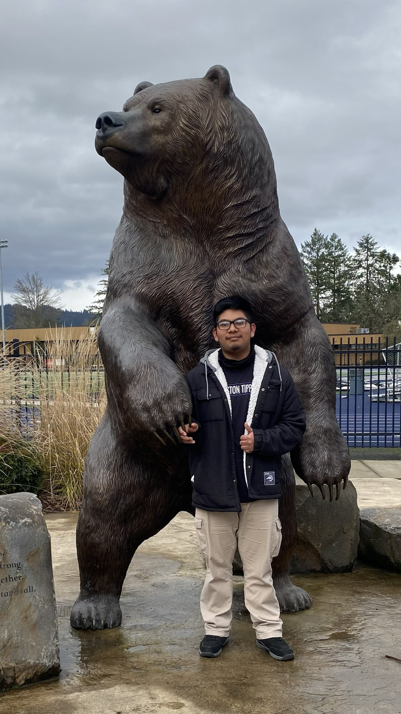

Acerca de Mí

¡Hola! Mi nombre es Alex Vega, un latino de 19 años que sueña con usar mi creatividad y habilidades para construir experiencias inmersivas para compartir con el mundo. Nací y crecí en Los Ángeles, California, en una familia humilde y trabajadora que sueña con un futuro mejor. Con el apoyo de mis amigos, mi familia y mi novia de toda la vida, busco lograr mis metas y sueños a pesar de los obstáculos y pruebas que enfrento en mi viaje.
Al crecer, aprendí a apreciar las pequeñas cosas de la vida. Ya fuera comida, dinero limitado, familia, amigos y mucho más. Mi familia me enseñó la importancia de la humildad, el trabajo duro, el ingenio y la fe. Y no sólo me han contado estos valores fundamentales, sino que lo han demostrado con el ejemplo en su vida cotidiana. Lo han demostrado a través de su deseo de seguir adelante a pesar de sus largos y agotadores días de trabajo. Gracias a esto, me he sentido inspirado a tener esa misma determinación y deseo de progresar en mis tareas y proyectos diarios a medida que avanzo en mi trayectoria profesional en mi vida.
Además de mi familia, también hay otras dos personas en mi vida que han apoyado y demostrado un genuino compañerismo y lealtad: mi novia y mi mejor amigo. Conocí a mi novia en un estudio de trabajo y, desde entonces, ella me ha apoyado y alentado a seguir avanzando hacia mis metas y sueños, sin importar cuán difíciles o poco realistas puedan parecer. Gracias a ella, realmente creo que puedo tener éxito en mi trayectoria académica y en mi futura carrera. Mi mejor amigo siempre me ha apoyado desde que nos conocimos en quinto grado. Él siempre ha estado ahí para ayudarme durante toda mi vida, especialmente durante los momentos difíciles. Y gracias a su apoyo, me siento más seguro que nunca de mis propias habilidades y destrezas. Estoy verdaderamente agradecido de tener a cada persona en mi vida que me ha mostrado un apoyo y un amor infinitos.
Y debido a todo esto, planeo dar un ejemplo vivo de cómo el trabajo duro, la creatividad, la fe, la esperanza y la determinación son los valores clave que necesitas para cumplir tus sueños. Vengo de una familia hispana de bajos ingresos y, como estudiante universitario de primera generación, quiero mostrarles a los demás que siempre es posible cumplir tus sueños, sin importar cómo sean tus antecedentes.
Académicos
Después de graduarme de la escuela secundaria, decidí continuar mi educación en la Universidad George Fox, una universidad cristiana privada. Decidí especializarme en Ciencias de la Computación y especializarme en Teología con concentración en Ministerios Cristianos. La razón principal por la que elegí estudiar Ciencias de la Computación es que disfruté la idea de canalizar mi creatividad al mundo digital, donde todos pueden experimentarla a través de sitios web, videojuegos, programas o incluso aplicaciones. También quería incorporar mi fe al ámbito laboral, por eso también me estoy especializando en Teología.
Desde mi infancia siempre me han apasionado los videojuegos. Disfruté jugando una variedad de juegos, lo que me ayudó a desarrollar mi creatividad y mis habilidades para resolver problemas. Y un recuerdo central que tengo en mi infancia fue durante mi quinto año de grado. Mi mejor amigo y yo compartimos nuestro amor por los videojuegos y queremos ser desarrolladores de videojuegos en el futuro. Y recuerdo hacer computadoras de papel en clase donde fingíamos jugar un videojuego que habíamos diseñado y programado. Este fue el momento en el que mi curiosidad técnica y mi creatividad empezaron a despertar.
En el semestre de primavera de mi segundo año de universidad, tomé un curso de Desarrollo de Juegos, donde estuve expuesto al mundo de Unity, una plataforma y motor de creación de juegos. También aprendí C#, un lenguaje de programación utilizado para crear scripts que dieron vida al juego. Me asocié con otros dos compañeros de clase y juntos diseñamos un juego en 2D parecido a un pícaro llamado “Bluecloak”. Esta oportunidad me permitió aprovechar toda mi creatividad y habilidades de programación para crear una experiencia interactiva para que los usuarios disfruten. Toda esta experiencia me abrió los ojos a lo que puedo ser: un desarrollador de videojuegos que cuenta historias.
Por eso, me esfuerzo por crear experiencias inmersivas donde los usuarios puedan aprender más sobre sí mismos en función de sus valores y características, y cómo afectan el mundo digital en el que “viven”. Porque al final, las decisiones que tomemos en la vida siempre serán importantes tanto para nuestra vida presente como para la futura, sin importar cuán grandes o pequeñas sean.
Mi Fe
Mi viaje espiritual no siempre ha sido fácil. Me convertí en parte de una iglesia pentecostal alrededor de los diez años, donde experimenté por primera vez la presencia de Dios. Desde entonces, mi deseo de saber más sobre Cristo creció cada vez más a medida que seguía yendo a la iglesia, leyendo la Biblia y orando a Dios. Luego, cuando me sentí preparado, acepté a Dios en mi corazón. Y después de tomar una clase dentro de la iglesia, me bauticé y tuve mi primera “Cena del Señor” con la congregación, y comencé mi viaje como seguidor de Cristo.
Desde que acepté a Dios en mi vida, es como si tuviera un guardián conmigo en todo momento. Observándome, aconsejándome, protegiéndome y guiándome a través de diferentes partes de mi vida. Y durante muchos momentos difíciles en los que tuve que tomar decisiones críticas, sentí que Dios señalaba la dirección correcta. Pero hubo momentos en los que me sentí solo, ya fuera alejando a Dios avergonzado o simplemente atrapado en tantas cosas en mi vida. Pero me di cuenta de que estos momentos son pruebas diseñadas para impulsarme y ayudarme a crecer tanto espiritual como personalmente. Incluso durante los momentos en que fracasé, siento que Dios me levanta y me guía.
En mi iglesia, tuve mentores que me enseñaron más sobre la Biblia, las prácticas espirituales y los dones que Dios nos dio a todos y cada uno de nosotros para usarlos con el fin de ayudar a los demás. ¡Hay una variedad de dones: oración, enseñanza, predicación, curación, hablar en lenguas, expulsar demonios y más! Y mis mentores ven los dones que tengo y realmente creen que Dios tiene grandes planes para mí. Mis mentores no fueron los únicos que me aseguraron mi propósito; también fueron el resto de la iglesia, mis amigos, mi familia y mi novia. Cada vez que tenía ganas de rendirme porque sentía que no era lo suficientemente bueno, ella me aseguraba que lo era y que Dios siempre está aquí para nosotros, pase lo que pase.
A medida que continué mi educación con mi especialización en Teología, aprendí más sobre la cultura y las prácticas de otras denominaciones y grupos bíblicos. Cada grupo espiritual tiene su propia visión de la Biblia y, a partir de ahí, predican y practican basándose en sus creencias. Y entre cada grupo hay una variedad de ideas conflictivas y diferencias que pueden separarlos unos de otros. Pero también tienen muchas cosas en común que los acercan más que nunca. Y algunas de las cosas principales son estas: creer en la palabra de Dios, la salvación traída por Jesús’ sacrificio, la importancia del bautismo y la predicación del evangelio, y el poder tanto en la fe como en la oración.
Y por eso creo que Dios nos ama a todos por igual, sin importar quiénes seamos. Todos somos hijos de Dios; nadie es mayor que el otro. Y tal como está escrito en el libro del Génesis, todos somos creados a imagen de Dios. Entonces, no importa a qué denominación o grupo espiritual pertenezcamos, todos estamos conectados por el Espíritu Santo y la sangre eterna de Cristo.